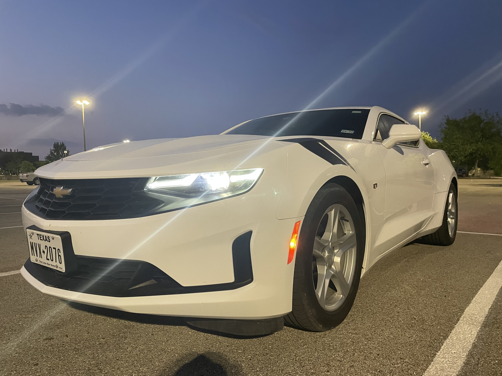
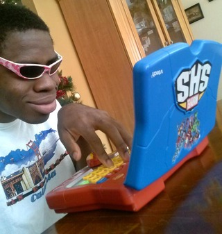
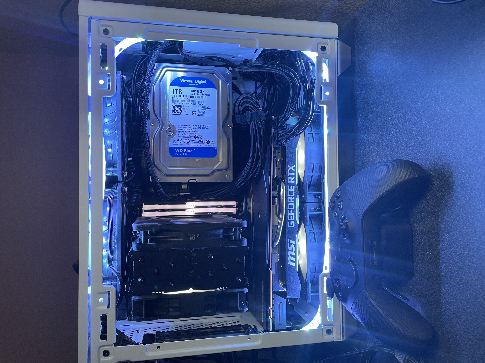

Very Scuffed Page
Home
Alex Hartman
Allen Hellums
Jared Ngai
JK Wallace
Landon Lipscomb
Parker Prudhome
Contact Me
Jared Ngai
Senior, Technology Management
The car I drive.

What Coding in Github feels like

My small compact gaming PC
